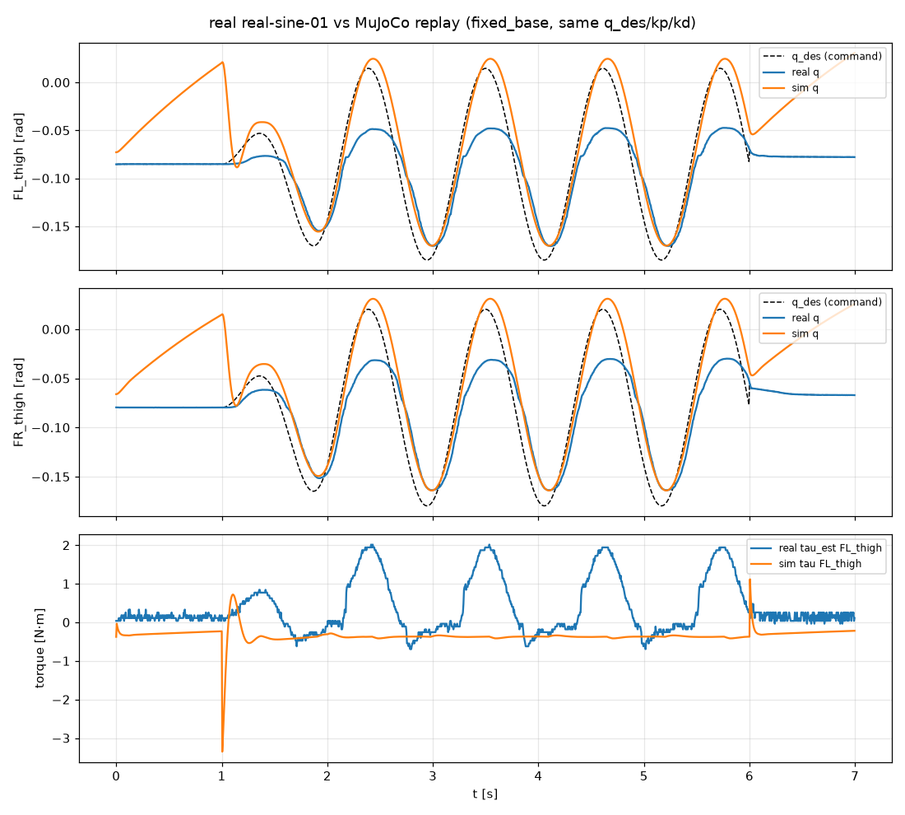
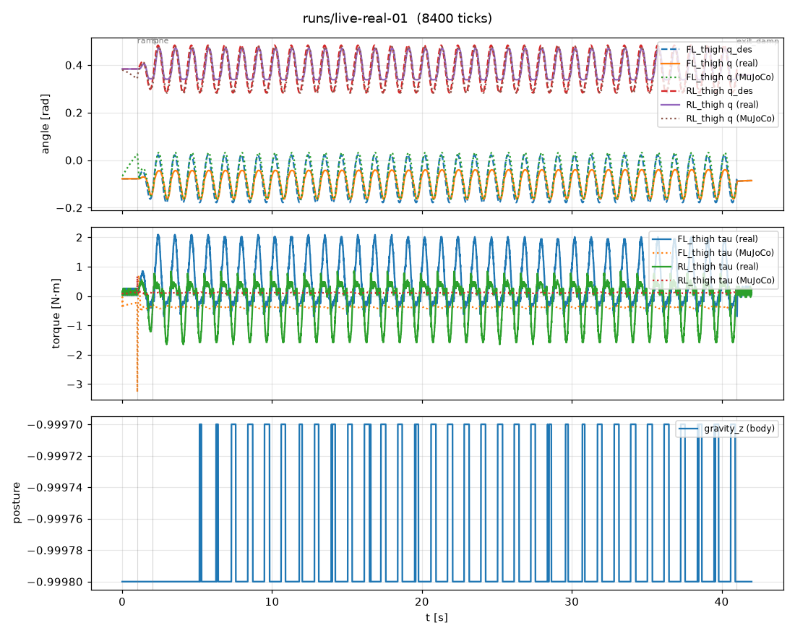

MuJoCo vs 실기 비교¶
같은 명령을 넣었을 때 시뮬레이션과 실기가 얼마나 다른지 본다. 두 가지 도구가 있다.
tools/compare_sim_real.py: 실기 기록(trace.csv)의 명령열(q_des, kp, kd)을 MuJoCo 에 그대로 재생하고 비교한다 (오프라인).tools/live_compare.py: 실기를 움직이는 같은 틱에 가드를 거친 동일한 명령을 MuJoCo 쌍둥이에도 보내고, 브라우저 차트로 관절각·토크를 실시간 비교한다 (온라인). 끝나면real.csv,sim.csv,summary.json을 남긴다.
둘 다 제어기를 다시 돌리는 것이 아니라 실기가 받은 명령을 시뮬 로봇에 똑같이 넣으므로, 차이는 순전히 “로봇(물리)” 쪽의 차이다.
시뮬 쌍둥이 모델 선택¶
실기 시험은 몸통을 박스 위에 올려 다리를 공중에 띄운 상태에서 했다 (SDK 가 E9 전에 권하는 지지 상태).
실기 데이터도 이를 뒷받침한다: 발 반력 ≈ 0, 관절 토크 ≈ 0, 허벅지가 거의 수직(URDF 기하로는 발이 엉덩이 아래 0.33 m),
댐핑 중에도 다리가 움직이지 않음. 따라서 쌍둥이는 몸통을 공중에 고정한 모델(MujocoBackend(fixed_base=True))을 쓴다.
바닥에 놓는 모델로 같은 기록을 재생하면 초기 자세를 유지하지 못한다(안착 중 관절 0.69 rad 이동, 뒷다리 진폭비 3~4배). 아래 표의 “바닥” 열이 그 결과이며, 지지 상태 실험에는 쓰지 않는다.
재생 모드 |
안착 중 관절 변화 |
관절각 차이 RMSE (12관절 / 구동 4관절) |
|---|---|---|
바닥 ( |
0.686 rad |
0.123 / 0.170 rad |
몸통 고정 ( |
0.013 rad |
0.028 / 0.035 rad |
결과 1: 오프라인 재생 (real-sine-01, 허벅지 ±0.1 rad 0.9 Hz, kp 30 / kd 1.2, 1400틱)¶
python tools/compare_sim_real.py runs/real-sine-01 --joints FL_thigh,FR_thigh --fixed-base --out runs/compare-sine-01-fixed

관절 |
RMSE 실기−시뮬 |
최대차 |
진폭비 실기 |
진폭비 시뮬 |
지연 실기 |
지연 시뮬 |
토크 피크 실기 |
토크 피크 시뮬 |
|---|---|---|---|---|---|---|---|---|
FL_thigh |
0.049 rad |
0.109 |
0.62 |
1.01 |
60 ms |
45 ms |
2.02 N·m |
3.35 N·m |
FR_thigh |
0.043 |
0.095 |
0.67 |
0.98 |
65 |
45 |
1.43 |
2.94 |
RL_thigh |
0.021 |
0.053 |
0.68 |
0.97 |
65 |
45 |
1.50 |
1.19 |
RR_thigh |
0.019 |
0.041 |
0.79 |
0.97 |
70 |
45 |
1.06 |
1.23 |
진폭비 = 실제 움직인 폭 / 명령 폭. 지연 = 명령 대비 상호상관 최대 지점.
결과 2: 실시간 비교 (live-real-01, 같은 동작 40 s, 8200틱)¶
docker/sdk.sh bash -c "source docker/dds_env.sh && python3 tools/live_compare.py --backend dds --program sine --joints thigh --amp 0.1 --seconds 40 --twin fixed"
# PC 에서: ssh -L 8767:127.0.0.1:8090 thor → http://127.0.0.1:8767/

관절 |
RMSE 실기−시뮬 |
추종 RMSE 실기 |
추종 RMSE 시뮬 |
진폭비 실기 |
진폭비 시뮬 |
지연 실기 |
지연 시뮬 |
|---|---|---|---|---|---|---|---|
FL_thigh |
0.039 rad |
0.036 |
0.024 |
0.62 |
0.98 |
60 ms |
45 ms |
FR_thigh |
0.037 |
0.035 |
0.023 |
0.67 |
0.97 |
65 |
45 |
RL_thigh |
0.026 |
0.032 |
0.018 |
0.67 |
0.97 |
60 |
45 |
RR_thigh |
0.018 |
0.028 |
0.019 |
0.78 |
0.97 |
65 |
45 |
쌍둥이 시뮬과 HTTP 서버를 같은 프로세스에서 돌려도 200 Hz 루프의 기한 초과는 8200틱 중 3회(최대 지연 15 ms)였다. 오프라인 재생과 실시간 비교의 수치가 같은 것은, 시뮬이 결정적이고 실기 동작이 재현성 있게 반복됨을 뜻한다.
해석¶
시뮬은 명령을 거의 그대로 따른다. 진폭비 0.97~1.01, 지연 45 ms. kp 30 / kd 1.2 의 2차 응답에서 기대되는 값이다.
실기는 명령 진폭의 62~78%만 움직이고 15~20 ms 더 늦다. 앞다리(0.62~0.67)가 뒷다리(0.67~0.78)보다 덜 움직인다.
정지 마찰이 있다. 댐핑(kp 0)만 보내는 1초 동안 시뮬 다리는 중력 평형점으로 흔들려 가는데 실기 다리는 전혀 움직이지 않는다. MJCF 의 관절 마찰(
frictionloss 0.02)은 실물보다 훨씬 작다. 진폭 손실의 가장 유력한 원인이다.토크 추정치는 서로 다른 양이다. 실기
tau_est피크 1.2~2.1 N·m 는 드라이버의 전류 기반 추정이고, 시뮬 토크는 같은 PD 식의 출력이다. 실기가 덜 움직이므로 PD 오차항은 더 큰데 추정 토크는 더 작다 → 드라이버 내부에서 게인 스케일·전류 제한·마찰 보상 여부가 모델과 다를 수 있다.RL 허벅지는 아래 반환점(약 0.32 rad)에서 평평해진다. 시뮬에는 없는 접촉(박스 모서리 또는 기계적 한계)으로 보인다. 실물을 확인할 것.
sim2real 관점: 시뮬에서 학습한 정책은 관절이 명령의 ~97%를 따른다고 가정하지만 실기는 0.9 Hz 에서 ~30% 덜 움직인다.
해결 방향은 (a) 실기 kp 를 올리거나 마찰 피드포워드를 넣기, (b) 학습 시 마찰·백래시·지연 무작위화(사양의 domain randomization),
(c) 모델의 frictionloss/damping 을 실측에 맞추기다. 이 도구들로 (c) 를 맞춘 뒤 다시 비교하면 된다.
방법 요약¶
실기 기록의 첫 관절각으로 시뮬을 초기화한다 (몸통 고정, 또는 바닥 모드면
--base-z높이).1초 동안 kp 30 으로 초기 자세를 잡고 안착시킨 뒤, 안착 후 관절 변화량을 기록한다.
실기 기록의 모든 틱을 같은 주기(5 ms)로 재생한다. 틱마다
JointCmd.pd(q_des_i, kp_i, kd_i).관절별 RMSE·최대차, 구동 관절의 진폭비, 명령 대비 지연(상호상관, 최대 0.5 s), 토크 피크를 계산한다.
원본: evidence/20260916/compare-sine-01-*.summary.json, live-real-01.*.csv, live-real-01.summary.json.